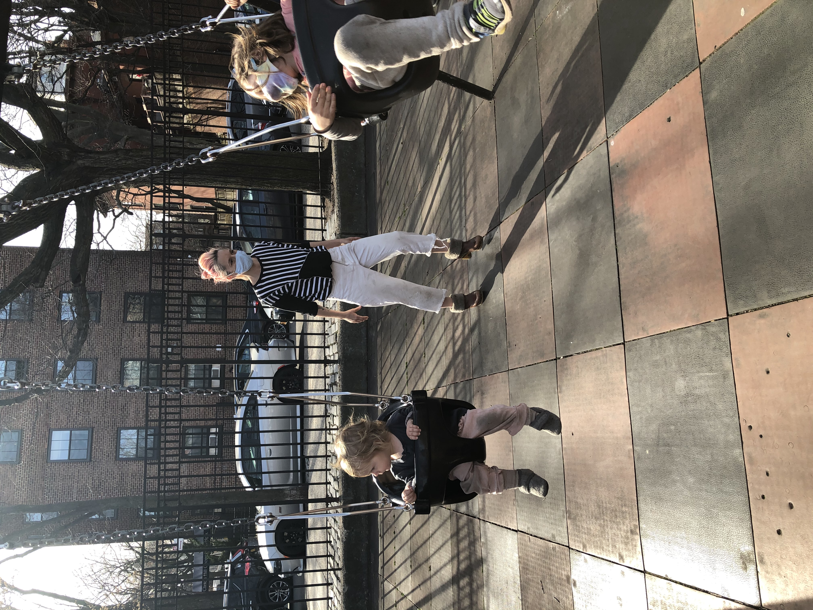
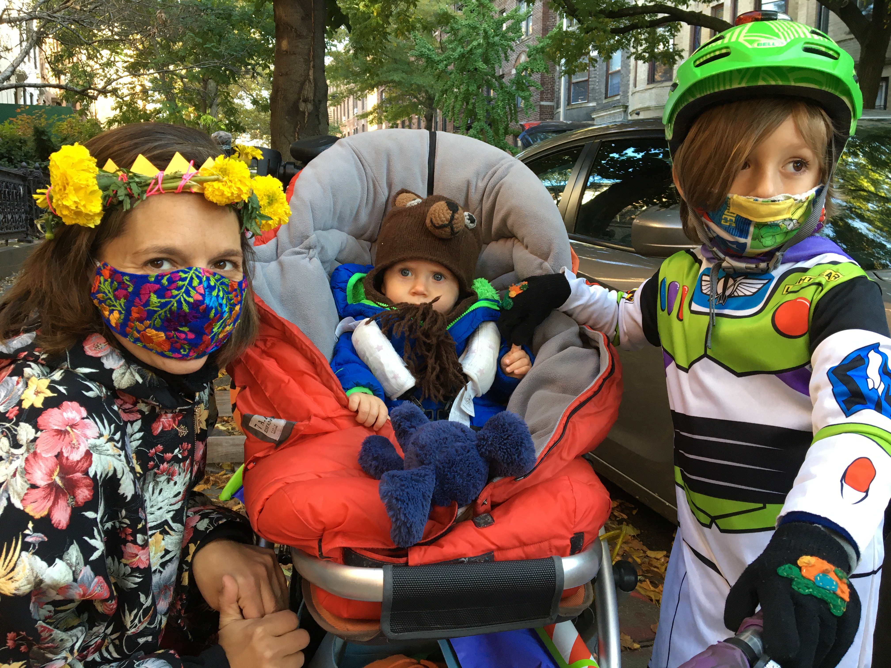

If you remember, in the beginning they told us we didn’t need masks. Or they told us we wouldn’t get any masks. Or they told us to stay inside. Or they told us to stay six feet apart. The stores didn’t have any masks. They told us cloth masks would be good. They told us cloth masks were inadequate. They said children two and up should wear masks. Two-year-old and three-year-old children can’t really keep masks over their faces. I got angry when we all pretended that the toddlers wearing masks over their chins was doing anything. My little one (the one born eleven weeks before lockdown) spent her first three years playing with most children outside. I’ll admit it. I didn’t make her wear a mask because I thought it was stupid to pretend she'd be able to wear it correctly.
I bought her base layers instead and she spent hours and hours in Prospect Park. We don’t live near that park anymore, but if we bike by it, or through it, she points out specific trees, or rocks, and tells me what she did there when the park was her school. I loved it when the park was her school, and she did too, but now she also tells me that she was glad when she could go to inside school because actually, she got really cold. My ears used to hurt from the straps of the masks. My big kid had to be convinced it was ok to stop wearing them outdoors. It took him the longest of our family to stop wearing masks in restaurants, stores, buses, school.
 Home "Of Ghouls & Gratitude/October 2021